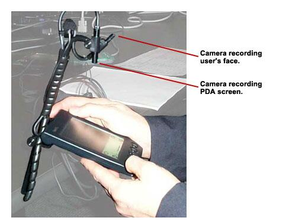
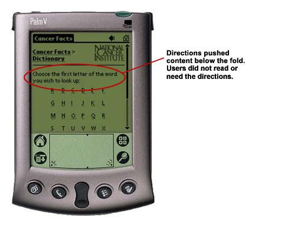
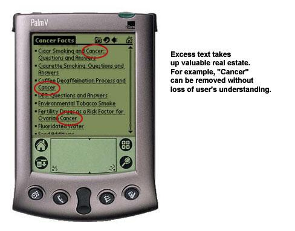
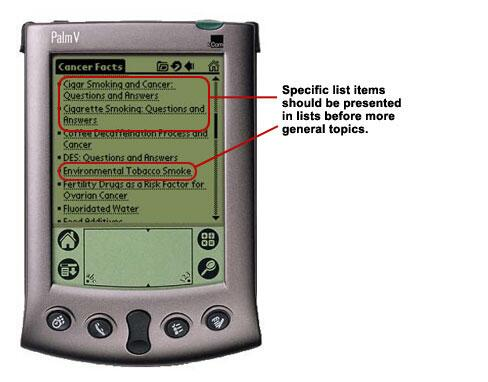
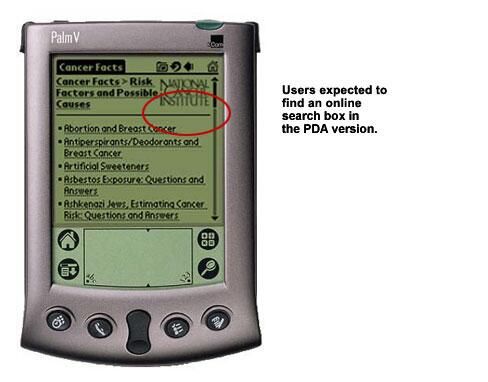
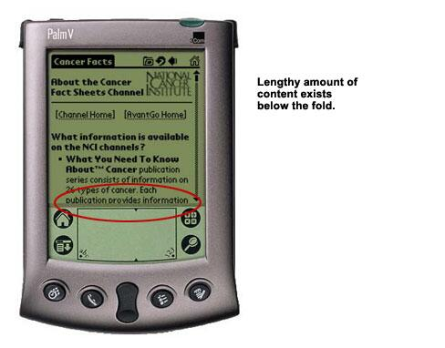

Providing cancer information on handheld wireless devices such as Palm and Pocket PCs presents new challenges to designers and usability professionals. This case study evaluates the process from recruitment to testing to screen designs.
CIS – Cancer Information Services
The National Cancer Institute's (NCI) Cancer Information Service (CIS) is a network of 14 offices throughout the country that provides services within the United States, including Puerto Rico, and the U.S. Virgin Islands. For further information, visit the CIS Website.
Purpose of Study: CIS Partnership Staff, who travel extensively and can't access the CIS Web site, may access cancer information through their handhelds.
This study also provided the opportunity to determine if cancer information could be designed for the public on PDAs.
The AvantGo Enterprise 4.2 Solution provides a platform to deliver Internet content onto handhelds. A special detailed development lesson on using AvantGo is available.
Recruiting Test Participants
Recruitment agencies are not likely to have the same success in recruiting PDA users as they did recruiting Web users.
Recruitment firms do not have the experience to differentiate an experienced PDA user from an inexperienced user. PDA test participants did not have as much experience or product knowledge as previous Web test participants.
Detailed screening questionnaires are needed to find skilled PDA users.
Selecting participants with an appropriate level of product knowledge is key to conducting a good usability evaluation. For PDA users, there is an issue of depth versus breadth of knowledge of the device.
For example, in several instances PDA users indicated they used their handheld on a daily basis for numerous purposes but were unaware of the search capability until this feature was pointed out to them during testing.
Recording the Test Design
PDAs and computers require different scenarios
Method
The CIS Web site was used to determine potential scenarios. Conversations with employees from the CIS regional offices determined job responsibilities and tasks that occurred on a day-to-day basis.
Lessons Learned
Scenarios designed for the Web did not necessarily translate to the PDA because PDA users saw the ability to access cancer content on handhelds as a supplement to the information available online. This altered their behavior and usage patterns on PDA.
For example, users requested that the topics be arranged by cancer type in order to access the content more quickly.
Hardware and software on PDAs vary significantly.
Usability testing on PDAs needs to take into account variability in hardware and software.
For example, there are four different pathways to input data onto the PDA:
- Character Recognition
- On-screen keyboard
- Portable, foldout keyboard
- Thumb keyboards (Blackberry)
This may have a significant effect on usability testing for performance.
Users are aware of the limited memory capability in their PDAs.
This has an effect on the likelihood of the user downloading content, especially large amounts of it. Communicating the level of remaining memory on PDAs and size of content to download may help alter the user's behavior.
| Handheld | Operating System Version | Expandable Memory Potential |
|---|---|---|
| Palm | 3.1 | Yes |
| PocketPC | 3.0 | Yes |
| Blackberry | 2.1 | No |
PDA testing takes a greater amount of time than computer testing.
Identical scenario comparison
| Media | Length of time to complete scenarios |
|---|---|
| Computer | 1 hour |
| Handheld | 1.5 hours |
There may be two reasons for the time differences.
- The user's ability to adjust to working with a handheld
- The novelty of working in a PDA testing environment
Examples of factors that affected performance included the user's understanding of how the testing equipment works and the facilitator's instructions on how to use the software.
Recording the Test
Recording the user’s interaction required special tools
A specialized test camera mount provided the ability to capture the user's face and interaction in a handheld screen environment. This device allowed the user to hold the handheld naturally. A less effective alternative—having the PDA mounted on a fixed surface—prevented the user from interacting normally with the device.
The testing setup included two small cameras: one trained on the user's face and the second on the handheld screen.

Lighting must be tested and adjusted in advance of testing.
Lighting required for the video recording caused glare problems for the user. Commercially available screen protectors helped reduce the glare but also reduced the contrast ratio (leading to lower levels of screen readability) as well as a change in the user's writing speed.
| Type of Handheld | Model | Glare Problem |
|---|---|---|
| Blackberry | R9577M-2-5 | Has built-in glare screen and is least susceptible to the glare problem |
| Color iPaq | 3670 | Backlit display reduces the glare problem. |
|
PalmPilot Palm-based products |
(Visor) | Visor is most susceptible to glare problems |
Interface Design
The smaller size and resolution of the PDA screen presented usability challenges, such as size of graphics and link size.
Instructions and other similar text should be used sparingly and only when necessary.

Instructions cause content to be pushed below the fold, which can then be missed by users.
Links should be brief and contain only necessary key words.

As with Web pages, specific options should be presented before general options.

PDA users expect to find Web-like interfaces on their handhelds.
Users familiar with the search device on the Web expected to find a visible search box within the PDA interface.

For further search lessons learned, please see the special detailed development lesson on using AvantGo.
Due to low screen resolution and small screen size, long narrative descriptions were not effective.

For example, PDA users seldom used the Frequently Asked Questions section because it was so long.